14 ảnh chụp fullPage tại từng bước THÀNH CÔNG của luồng nghiệp vụ: Tiếp đón → Khám → Kê đơn → Ký & gửi ĐTQG → Đóng lượt khám.
Dữ liệu test chuẩn bị từ đâu
Nguồn dữ liệu test: Toàn bộ dữ liệu thuộc tenant riêng biệt DIAB-TEST (tenant_id=2),
seed từ db/seeds/diab_test_tenant.sql (7 tài khoản/6 vai trò mật khẩu admin123,
4 phòng khám, 8 thuốc gồm thuốc thiếu tồn & cận HSD, 15 bệnh nhân nền, 1 luật tương tác thuốc).
Danh mục dùng chung (ICD-10, dịch vụ, quyền, vai trò) từ db/migrations/9007_seed_master_data.sql.
Bệnh nhân trong evidence được tạo MỚI ngay trong lượt chạy qua UI (/patients/new).
Dữ liệu tách hoàn toàn khỏi tenant demo DIAB-HCM (id=1).
1. Đăng nhập lễ tân→2. Trang tiếp đón→3. Chọn bệnh nhân→4. Tiếp đón xong→5. Gọi số→6. Tạo lượt khám→7. Bắt đầu khám→8. Sinh hiệu→9. Chẩn đoán→10. Bệnh án→11. Ký bệnh án→12. Kê đơn thuốc→13. Ký & gửi ĐTQG→14. Đóng lượt khám
Bước 1 — Đăng nhập lễ tânPASS
evidence-shots/01-dang-nhap-le-tan.png
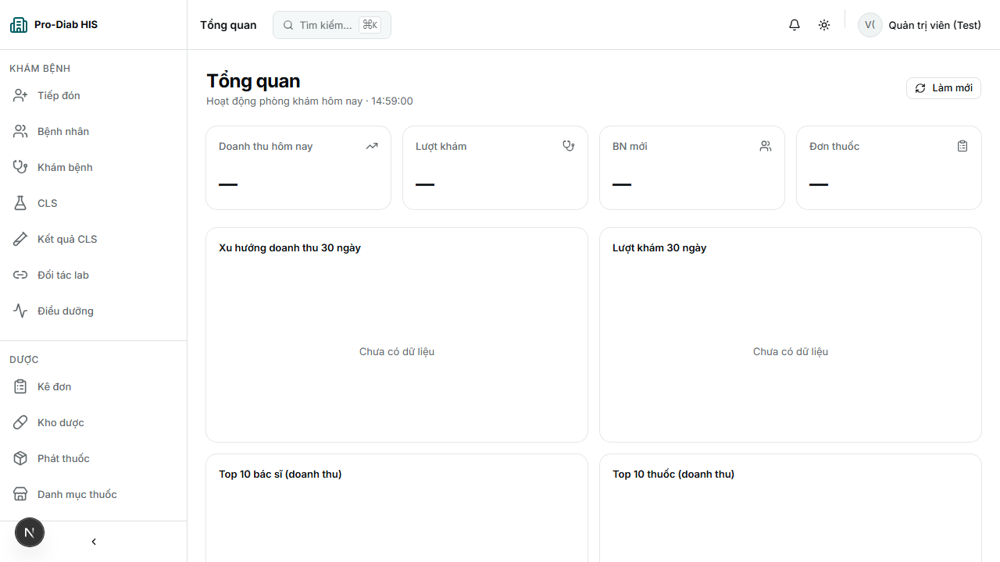
Bước 2 — Mở trang tiếp đónPASS
evidence-shots/02-trang-tiep-don.png
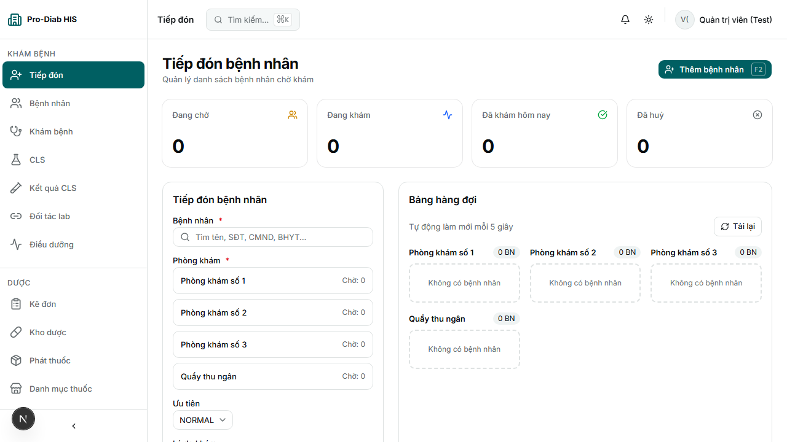
Bước 3 — Tìm/tạo & chọn bệnh nhân trong form tiếp đónPASS
evidence-shots/03-chon-benh-nhan.png
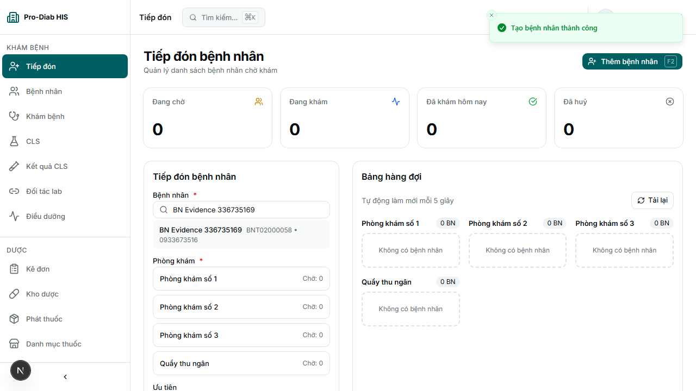
Bước 4 — Tiếp đón xong (vé vào hàng đợi)PASS
evidence-shots/04-tiep-don-xong.png
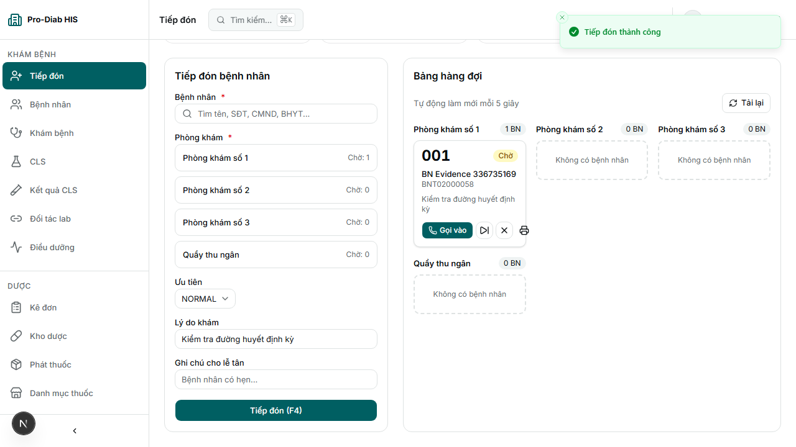
Bước 5 — Gọi số bệnh nhân vào khámPASS
evidence-shots/05-goi-so.png
Bước 6 — Tạo lượt khám (trang chi tiết)PASS
evidence-shots/06-tao-luot-kham.png
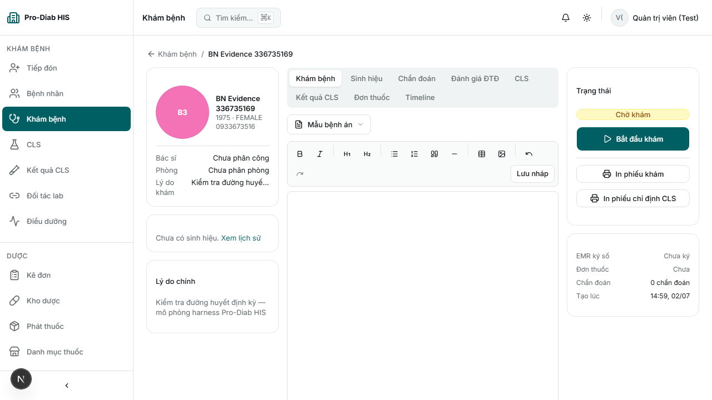
Bước 7 — Bắt đầu khám (chuyển IN_PROGRESS)PASS
evidence-shots/07-bat-dau-kham.png
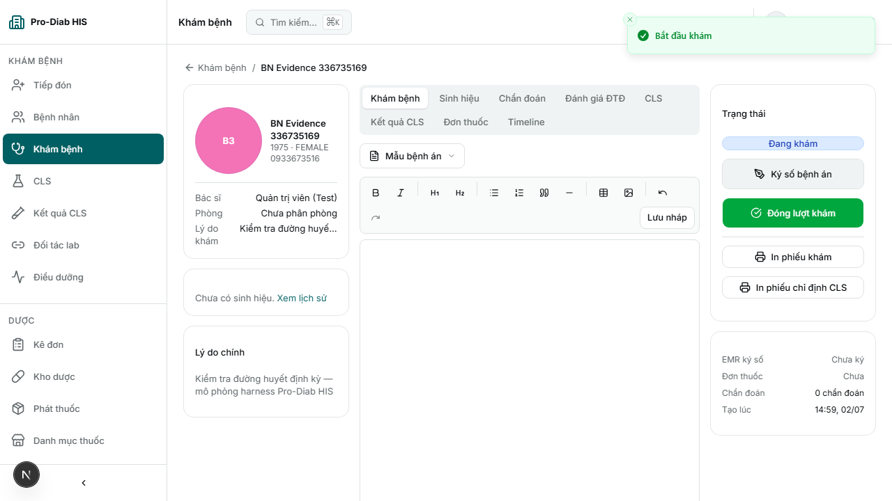
Bước 8 — Ghi sinh hiệuPASS
evidence-shots/08-sinh-hieu.png
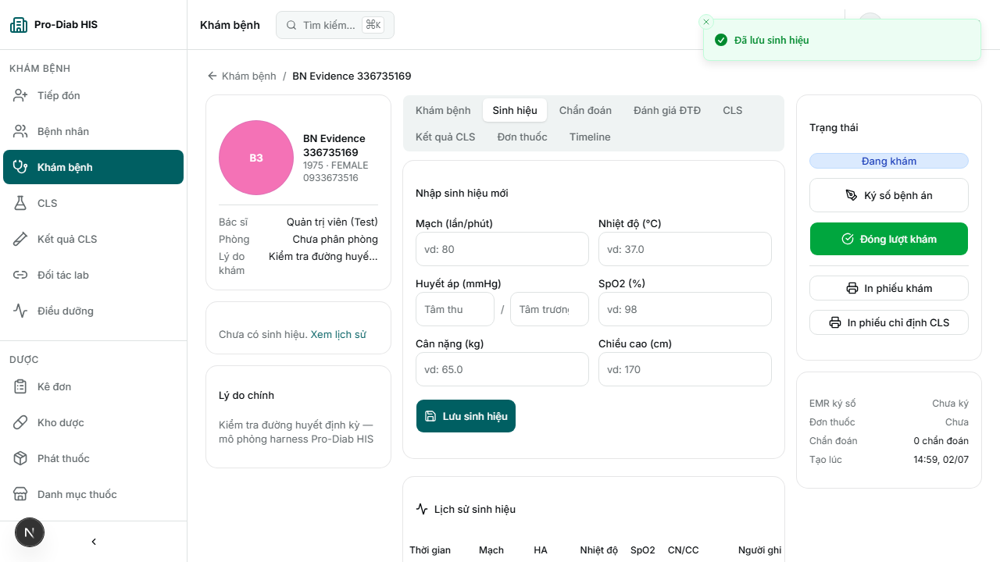
Bước 9 — Ghi chẩn đoán ICD-10PASS
evidence-shots/09-chan-doan.png
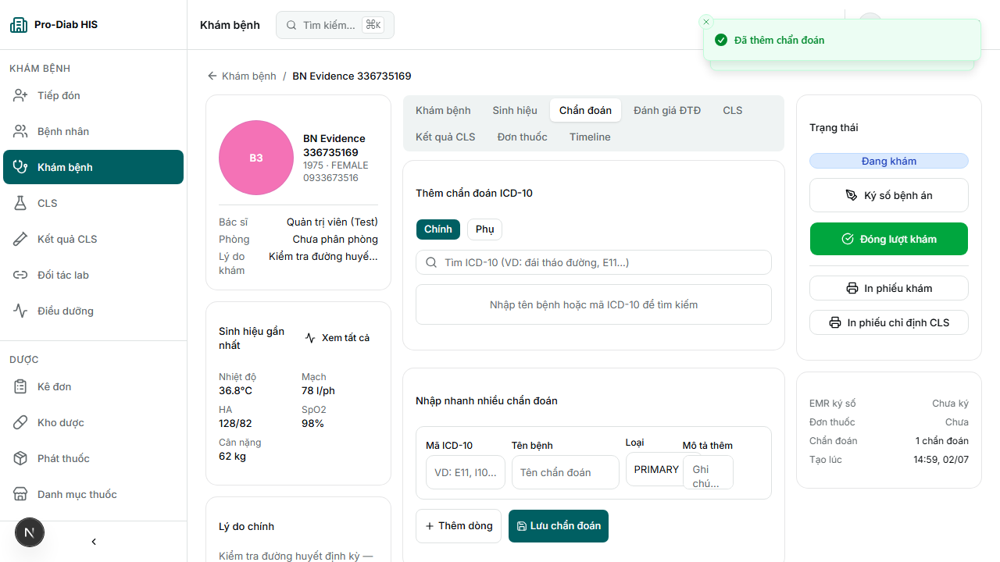
Bước 10 — Viết bệnh án (EMR)PASS
evidence-shots/10-benh-an.png
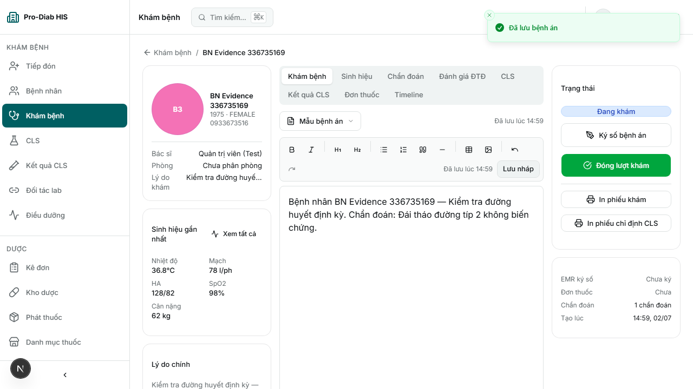
Bước 11 — Ký số bệnh án điện tửPASS
evidence-shots/11-ky-benh-an.png
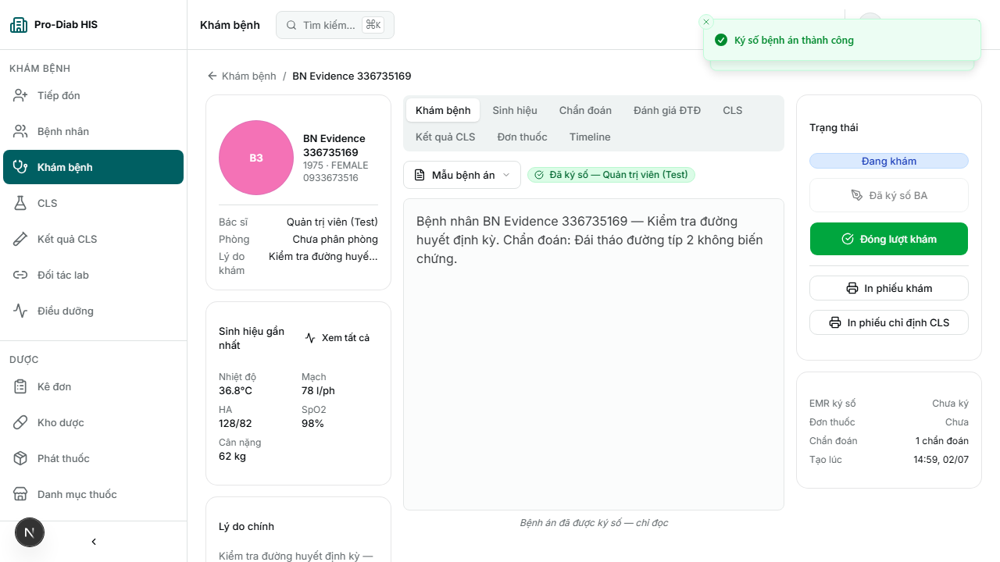
Bước 12 — Kê đơn thuốcPASS
evidence-shots/12-ke-don-thuoc.png
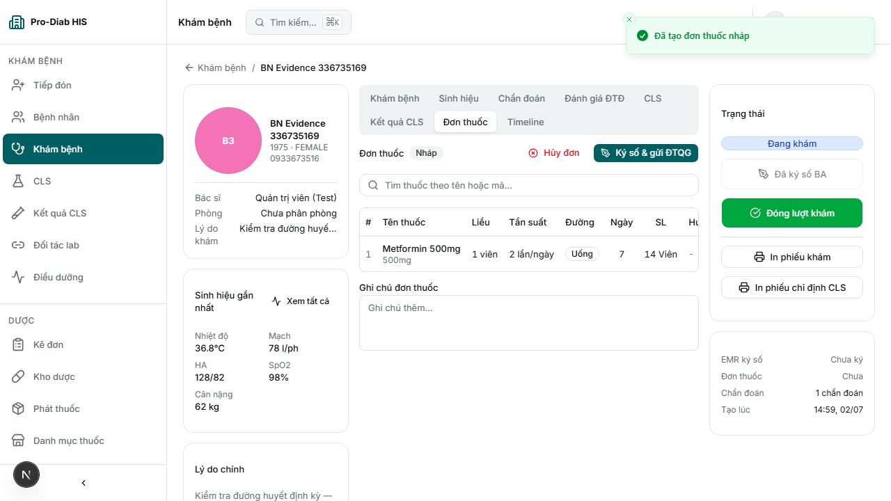
Bước 13 — Ký số & gửi ĐTQG đơn thuốcKÝ OK · ĐTQG LỖI
evidence-shots/13-ky-va-gui-dtqg.png
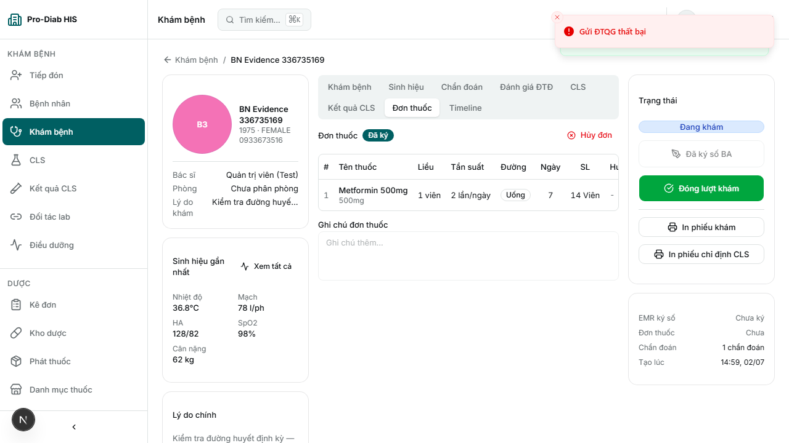
⚠️ Đơn thuốc đã ký số thành công (badge "Đã ký"), nhưng bước đẩy lên cổng ĐTQG lỗi: POST /prescriptions/{id}/dtqg/submit trả HTTP 500 (toast đỏ "Gửi ĐTQG thất bại"). Đây là bug backend thật (nghi cùng họ lệch GUID/INT ở đường ĐTQG) — chưa sửa, KHÔNG che giấu trong evidence.